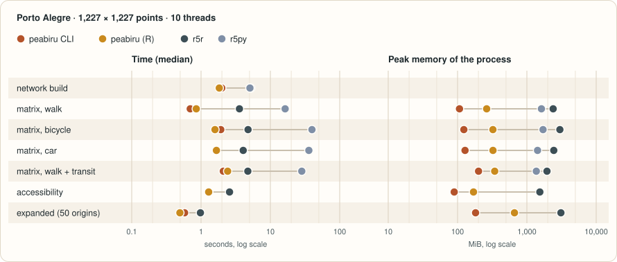
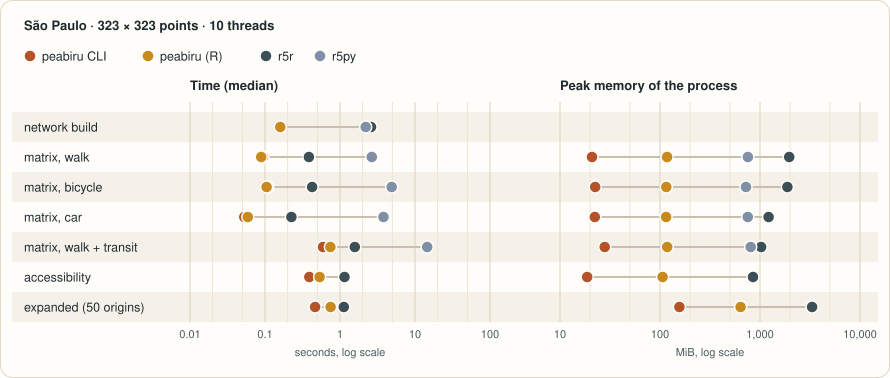

Benchmarks
peabiru next to the packages people use for travel-time matrices on OpenStreetMap
and GTFS, from R and Python: r5r and r5py, which run the same model, and dodgr, cppRouting,
networkx, igraph and pandana, which route streets with models of their own. Same inputs, same points,
same parameters where a package lets them be set, and for every package the time, the memory
and how far its answers are from peabiru's. The numbers below are generated from
data/benchmarks.json
(CSV), written by bench/site/run.py; the
container in bench/docker/ reproduces them.
Provisional. The results shown may come from an earlier run with fewer packages; the run date and the machine are listed under the methodology.
Summary
r5r, r5py
r5r, r5py
Porto Alegre, 1,227 × 1,227 points, 10 threads; median of 3 timed runs after a warm-up; memory is the peak of the whole process. Measured 2026-11-09.
Methodology
- Inputs: the Porto Alegre and São Paulo samples shipped with r5r
(
poa_osm.pbfwith the scheduledpoa_eptc.zipandpoa_trensurb.zipfeeds;spo_osm.pbfwith the frequency-basedspo.zip), no elevation raster. Origins and destinations are r5r's hexagonal grid of each city, all to all. Every package reads the same.pbf: dodgr and cppRouting throughosmdata_sc(), from the ways with ahighwaytag converted once to.osmXML withosmium(whatdodgr_streetnet_sc()would download; the conversion is not timed), networkx, igraph and pandana through pyrosm (OSMnx cannot read a.pbf; pyrosm reads it with OSMnx's network filters and exports an OSMnx-compatible graph). - Parameters: r5r's names and defaults, written out: departure 2019-05-13 14:00
(America/Sao_Paulo; the Porto Alegre feed only has afternoon service),
time_window = 10, percentile 50,max_trip_duration = 120, walking 3.6 km/h, cycling 12 km/h,max_lts = 2,max_rides = 3,draws_per_minute = 5,seed = 42. Accessibility: jobs, step function, cutoffs 30 and 60 min. Expanded matrix: first 50 origins × all destinations, with the breakdown. The other packages get the same walking and cycling speeds and the same 120-minute limit (applied afterwards where the query has none); what a package cannot honour is listed in the notes under each table. - What is timed: the routing call alone, separately from the network build, snapping the
points included. Each task runs in a fresh process that builds the network, runs the task once untimed
(warming up the JVM for r5r and r5py), then three timed runs; the page shows the median. The command-line
tool times build and routing inside the binary; it runs four processes and drops the first. Build time is
the median over the processes of a city; for the other packages it covers reading the
.pbfand building the graph of the mode (and the contraction for cppRouting and pandana). A package that would need more than about ten minutes per run is run on the first origins only, and the table says how many; its time is never extrapolated. - Memory: the peak resident set size of the whole process (network, warm-up and timed
runs; for r5r and r5py the R or Python process with its embedded JVM, heap limit 6 GiB), from
/usr/bin/time. - Threads: every package that can be told gets the same number of threads. r5py cannot, so it only appears in the all-cores runs; networkx and igraph always use one thread, so they are measured once and shown with that time in every column.
- Same answers? Each package's matrix is compared with peabiru's over the same origins:
pairs reached by both, pairs only one of them reaches within 120 minutes, and the median and 90th percentile
of the absolute difference. peabiru and r5r report whole minutes, the street packages fractions of a minute.
For cycling, r5r and peabiru keep cyclists off streets above traffic stress level 2 (
max_lts = 2); no street package models traffic stress, so their cycling routes are more direct and shorter. r5py runs its own build of R5 (7.5.1) with no seed and 60 Monte Carlo draws, and reads a copy of the São Paulo feed with exact duplicate lines removed (it refuses them).
Packages on the same tasks
Every package that ran a task, fastest first, with the difference of its answers from peabiru's. Not every package can do every task: only peabiru, r5r and r5py model public transport from a GTFS schedule, and only peabiru and r5r compute accessibility and the expanded matrix.


Porto Alegre (1,227 points, all to all; poa_eptc.zip, poa_trensurb.zip)
| Package | Language | Time, 10 threads |
|---|---|---|
| peabiru (R) | R | 1.83 s |
| peabiru CLI | Rust | 1.99 s |
| r5py | Python (Java) | 5.07 s |
| r5r | R (Java) | 5.24 s |
| Package | Language | Time, 10 threads | Peak memory (10 thr.) | Pairs reached by both | Only peabiru | Only this package | Median |Δ|, min | 90th pct |Δ|, min |
|---|---|---|---|---|---|---|---|---|
| peabiru CLI | Rust | 0.70 s | 107 MiB | reference | ||||
| peabiru (R) | R | 0.85 s | 263 MiB | same results (not compared in this run; see the parity suites) | ||||
| r5r | R (Java) | 3.58 s | 2,395 MiB | same results (not compared in this run; see the parity suites) | ||||
| r5py | Python (Java) | 16.3 s | 1,620 MiB | – | ||||
| Package | Language | Time, 10 threads | Peak memory (10 thr.) | Pairs reached by both | Only peabiru | Only this package | Median |Δ|, min | 90th pct |Δ|, min |
|---|---|---|---|---|---|---|---|---|
| peabiru (R) | R | 1.59 s | 324 MiB | same results (not compared in this run; see the parity suites) | ||||
| peabiru CLI | Rust | 1.93 s | 123 MiB | reference | ||||
| r5r | R (Java) | 4.76 s | 2,994 MiB | same results (not compared in this run; see the parity suites) | ||||
| r5py | Python (Java) | 39.8 s | 1,709 MiB | – | ||||
| Package | Language | Time, 10 threads | Peak memory (10 thr.) | Pairs reached by both | Only peabiru | Only this package | Median |Δ|, min | 90th pct |Δ|, min |
|---|---|---|---|---|---|---|---|---|
| peabiru CLI | Rust | 1.67 s | 128 MiB | reference | ||||
| peabiru (R) | R | 1.67 s | 324 MiB | same results (not compared in this run; see the parity suites) | ||||
| r5r | R (Java) | 4.05 s | 2,442 MiB | same results (not compared in this run; see the parity suites) | ||||
| r5py | Python (Java) | 35.9 s | 1,425 MiB | – | ||||
| Package | Language | Time, 10 threads | Peak memory (10 thr.) | Pairs reached by both | Only peabiru | Only this package | Median |Δ|, min | 90th pct |Δ|, min |
|---|---|---|---|---|---|---|---|---|
| peabiru CLI | Rust | 2.09 s | 201 MiB | reference | ||||
| peabiru (R) | R | 2.42 s | 344 MiB | same results (not compared in this run; see the parity suites) | ||||
| r5r | R (Java) | 4.73 s | 1,951 MiB | same results (not compared in this run; see the parity suites) | ||||
| r5py | Python (Java) | 28.4 s | 1,369 MiB | – | ||||
| Package | Language | Time, 10 threads | Peak memory (10 thr.) |
|---|---|---|---|
| peabiru (R) | R | 1.29 s | 170 MiB |
| peabiru CLI | Rust | 1.29 s | 90 MiB |
| r5r | R (Java) | 2.58 s | 1,536 MiB |
| Package | Language | Time, 10 threads | Peak memory (10 thr.) |
|---|---|---|---|
| peabiru (R) | R | 0.49 s | 662 MiB |
| peabiru CLI | Rust | 0.58 s | 182 MiB |
| r5r | R (Java) | 0.98 s | 3,099 MiB |
São Paulo (323 points, all to all; spo.zip)
| Package | Language | Time, 10 threads |
|---|---|---|
| peabiru (R) | R | 0.16 s |
| peabiru CLI | Rust | 0.16 s |
| r5py | Python (Java) | 2.20 s |
| r5r | R (Java) | 2.59 s |
| Package | Language | Time, 10 threads | Peak memory (10 thr.) | Pairs reached by both | Only peabiru | Only this package | Median |Δ|, min | 90th pct |Δ|, min |
|---|---|---|---|---|---|---|---|---|
| peabiru (R) | R | 0.089 s | 118 MiB | same results (not compared in this run; see the parity suites) | ||||
| peabiru CLI | Rust | 0.094 s | 21 MiB | reference | ||||
| r5r | R (Java) | 0.39 s | 1,958 MiB | same results (not compared in this run; see the parity suites) | ||||
| r5py | Python (Java) | 2.66 s | 756 MiB | – | ||||
| Package | Language | Time, 10 threads | Peak memory (10 thr.) | Pairs reached by both | Only peabiru | Only this package | Median |Δ|, min | 90th pct |Δ|, min |
|---|---|---|---|---|---|---|---|---|
| peabiru (R) | R | 0.10 s | 116 MiB | same results (not compared in this run; see the parity suites) | ||||
| peabiru CLI | Rust | 0.11 s | 22 MiB | reference | ||||
| r5r | R (Java) | 0.42 s | 1,878 MiB | same results (not compared in this run; see the parity suites) | ||||
| r5py | Python (Java) | 4.88 s | 724 MiB | – | ||||
| Package | Language | Time, 10 threads | Peak memory (10 thr.) | Pairs reached by both | Only peabiru | Only this package | Median |Δ|, min | 90th pct |Δ|, min |
|---|---|---|---|---|---|---|---|---|
| peabiru CLI | Rust | 0.053 s | 22 MiB | reference | ||||
| peabiru (R) | R | 0.059 s | 115 MiB | same results (not compared in this run; see the parity suites) | ||||
| r5r | R (Java) | 0.23 s | 1,219 MiB | same results (not compared in this run; see the parity suites) | ||||
| r5py | Python (Java) | 3.80 s | 756 MiB | – | ||||
| Package | Language | Time, 10 threads | Peak memory (10 thr.) | Pairs reached by both | Only peabiru | Only this package | Median |Δ|, min | 90th pct |Δ|, min |
|---|---|---|---|---|---|---|---|---|
| peabiru CLI | Rust | 0.59 s | 28 MiB | reference | ||||
| peabiru (R) | R | 0.74 s | 118 MiB | same results (not compared in this run; see the parity suites) | ||||
| r5r | R (Java) | 1.58 s | 1,026 MiB | same results (not compared in this run; see the parity suites) | ||||
| r5py | Python (Java) | 14.5 s | 807 MiB | – | ||||
| Package | Language | Time, 10 threads | Peak memory (10 thr.) |
|---|---|---|---|
| peabiru CLI | Rust | 0.39 s | 19 MiB |
| peabiru (R) | R | 0.54 s | 106 MiB |
| r5r | R (Java) | 1.15 s | 851 MiB |
| Package | Language | Time, 10 threads | Peak memory (10 thr.) |
|---|---|---|---|
| peabiru CLI | Rust | 0.47 s | 156 MiB |
| peabiru (R) | R | 0.75 s | 640 MiB |
| r5r | R (Java) | 1.12 s | 3,317 MiB |
Why the results differ
- peabiru (R). The R package calls the same Rust core as the command line, so its matrices are the same.
- r5r. Same model: peabiru ports R5's street and transit logic, so the difference is zero (also checked pair by pair, for many more parameters, by the parity suites in
bench/compare/). - r5py. The same R5 engine (its own 7.5.1 build), so street matrices are expected to agree. It has no seed and always uses 60 Monte Carlo draws, so transit on a frequency-based feed (São Paulo) changes from run to run.
Other routing tools
These tools are not timed here: they answer a different question, run as a server, or could not be run on these inputs. Rows checked against each project's documentation in November 2026.
| Tool | Written in | Streets | Public transport | Main outputs | Why not timed |
|---|---|---|---|---|---|
| gtfsrouter | R and C++ | only for transfers between stops | GTFS timetables | routes between stops, travel times from one stop to all stops, isochrones | computes stop-to-stop times, not times between points |
| m4ra | R and C++ (dodgr and gtfsrouter) | walk, bike, car | GTFS via gtfsrouter | multimodal travel-time matrices from points to the street network | not on CRAN; version 0.1.1.063 fails in m4ra_prepare_data() on both samples (the stop-to-stop matrix errors in every worker) |
| UrbanAccess + pandana | Python | walking network | GTFS as average headways (no schedule) | an integrated transit and walking graph for accessibility with pandana | its latest release (0.2.2, 2020) calls DataFrame.append, removed in pandas 2, so it needs an old Python; and an average-headway graph is a different model, not the same task |
| OpenTripPlanner | Java | walk, bike, car, bike and car sharing | GTFS and NeTEx, real-time updates (GTFS-RT, SIRI) | journey planning (itineraries) through a GraphQL server; travel-time analysis | a server, kept for a second round |
| OSRM | C++ | car, bicycle, foot profiles | no | routes, many-to-many tables, map matching, trips, as a server (contraction hierarchies or multi-level Dijkstra) | a server, kept for a second round |
| Valhalla | C++ | car, bicycle, pedestrian and more | multimodal routes (pedestrian + transit); not in its matrix service | routes, time and distance matrices, isochrones, map matching, as a server | a server, kept for a second round |